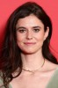

País:Reino Unido, 136 minutos.
Idiomas:Árabe, Inglés
GénerosRomántica, Drama
Director/es:Emerald Fennell
Guionistas:Emily Brontë, Emerald Fennell
Códec de vídeo:Unknown
Número: 246


Certificación:
Argumento:
Una audaz y original reinterpretación de una de una de las historias de amor más grandes de todos los tiempos, 'Cumbres Borrascosas' de Emerald Fennell está protagonizada por Margot Robbie como Cathy y Jacob Elordi como Heathcliff, cuya pasión prohibida se transforma de romántica a intoxicante en una épica historia de lujuria, amor y locura.
Reparto 

Medio: Archivo de video,
Localización: D:\Multimedia\Películas\Cumbres borrascosas (2026)\Cumbres borrascosas (2026).mkv
Prestado: No
Rel. aspecto: Unknown